About This Page
This is a small project archive meant to support my resume. Each entry gives enough context to show what I worked on, what tools were involved, and what kind of responsibility I had.
Projects
| Project | Date | Type | Keywords |
|---|---|---|---|
| HSHL Hackathon 2025: Robot Competition | March 2025 | Event / competition | Arduino, sensors, servos, task design, scoring |
| MQTT Christmas Lights Workshop | Dec. 2024 / Dec. 2025 | Workshop pilot | Arduino Nano ESP32, Wi-Fi, MQTT, LEDs |
| DSafe Modules | 2024-2026 | Educational content viewer | H5P, static web page, interactive learning content |
| Arduino-based Gaming Console | SS2024 | Embedded game project | Arduino, C++, display, rotary encoder, buttons |
| Automatic Plant Watering System | SS2026 | University embedded systems project | ESP32-C3, Raspberry Pi, MQTT, Flask, sensors, pumps |
| Moodle H5P Content Bank Versioning | Prototype | Moodle plugin | PHP, Moodle, H5P, Content Bank, version tracking |
| School Practicum: Classroom Technology Support | Oct. 2025 - Feb. 2026 | Teaching / classroom support | Lesson preparation, slides, digital tools, AI demos |
HSHL Hackathon 2025: Robot Competition
| Place | Hochschule Hamm-Lippstadt |
|---|---|
| Date | 19-21 March 2025 |
| Role | Co-organizer with Oleg Kelner (@eggcitedraccoon) |
| Format | Three-day Arduino prototyping competition |
Summary
We organized and delivered a three-day engineering competition where student teams built physical Arduino prototypes. The event combined electronics, mechanical construction, programming, debugging, and time-limited task planning.
The competition used a shared component box for each team. The box included Arduino Uno boards, a breadboard, keypad, servo motors, buttons, photoresistors, RGB LED, piezo speaker, IR sensors, display, potentiometers, and radio modules.
Challenge Set
| Task | Idea | Hardware / concepts |
|---|---|---|
| Post Terminal | Servo-controlled equipment cabinet with user/admin codes. | Keypad, buttons, RGB LED, photoresistors, servos |
| Sunflower | Platform that follows a light source. | Photoresistors, 360-degree servo, timing, feedback |
| Cake Sort | Automatic sorting station for marked objects. | IR sensors, servo gates, display, counting logic |
| MegaOhm | Learning device for resistor color codes and measurement. | Potentiometers, display, resistor measurement, RGB feedback |
| Radio Morse | Morse transmitter and receiver, later extended wirelessly. | Buttons, radio modules, display, reliability checks |
Selected Photos
{kind=link}
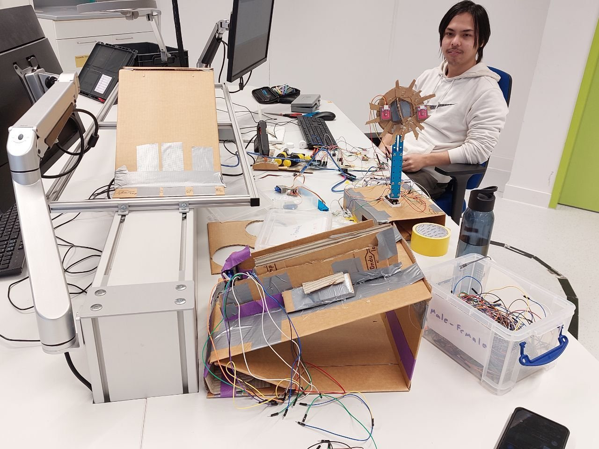
{kind=link}
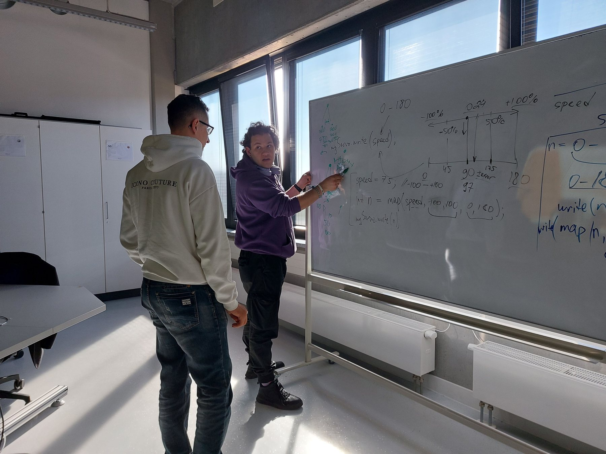
{kind=link}
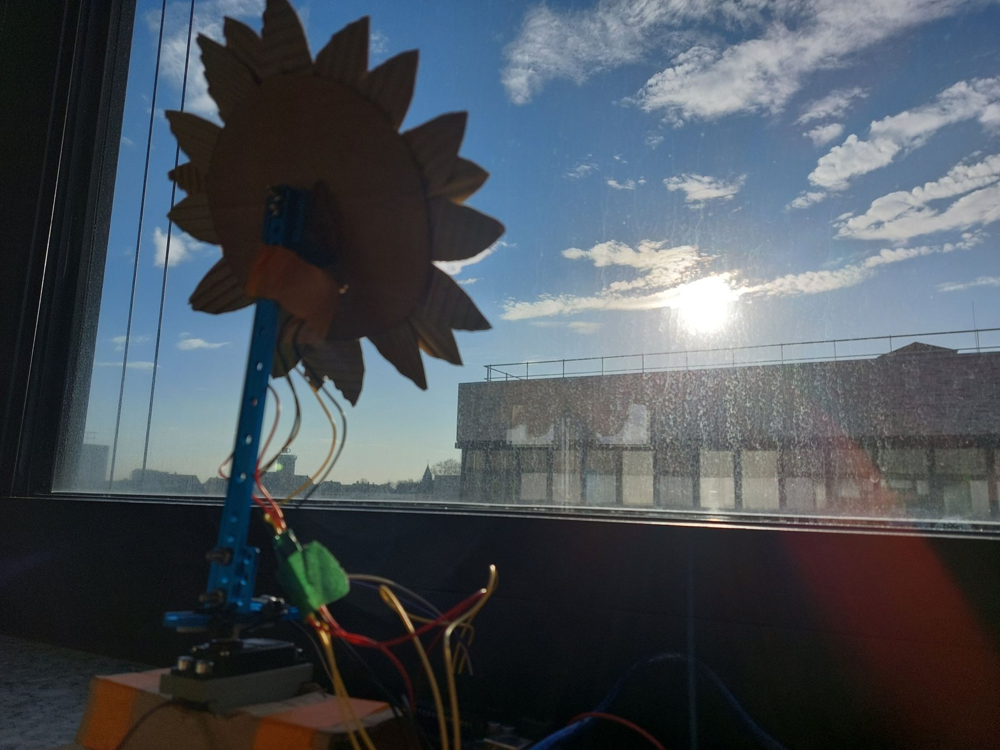
{kind=link}
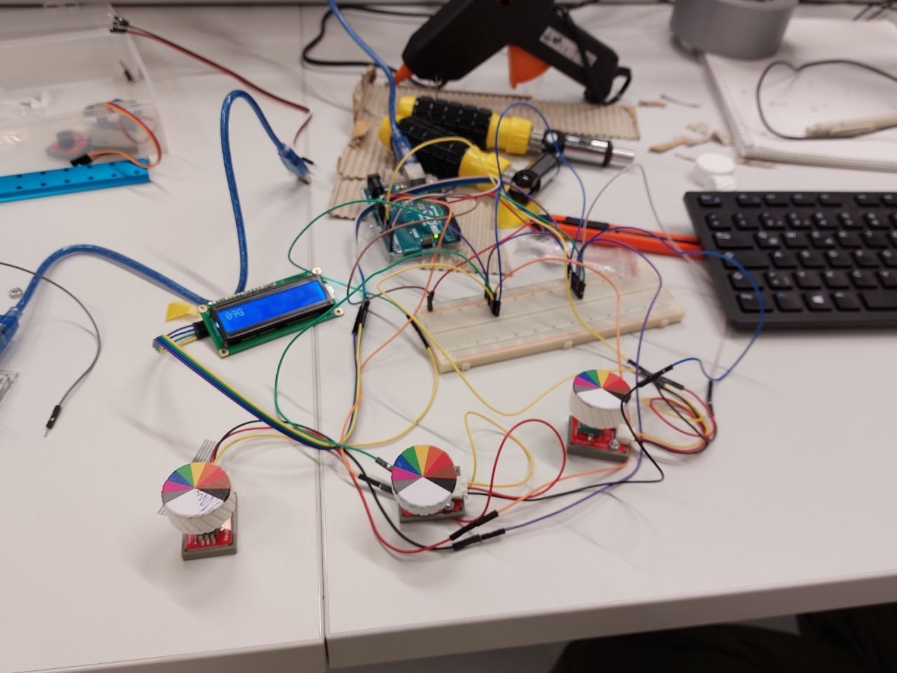
MQTT Christmas Lights Workshop
| Date | December 2024 and December 2025 |
|---|---|
| Format | Small workshop pilot sessions |
| Attendance | Tested with one participant in 2024 and two participants in 2025 |
| Platform | Arduino Nano ESP32, LEDs, Wi-Fi, MQTT |
| Role | Co-organizer with Oleg Kelner (@eggcitedraccoon) |
Summary
This workshop teaches participants to build a small Christmas-tree LED device and control it through MQTT messages. The material starts with basic electronics and ends with networked device behavior.
It is a designed and pilot-tested workshop, not as a large public event. The sessions were small, partly because the announcements did not reach potential participants as planned.
Workshop Content
- LEDs, breadboards, resistors, and basic wiring.
- Arduino Nano ESP32 setup and simple LED behavior.
- Wi-Fi connection handling and connection-status checks.
- MQTT publish/subscribe communication through a broker.
Selected Workshop Material
{kind=link}
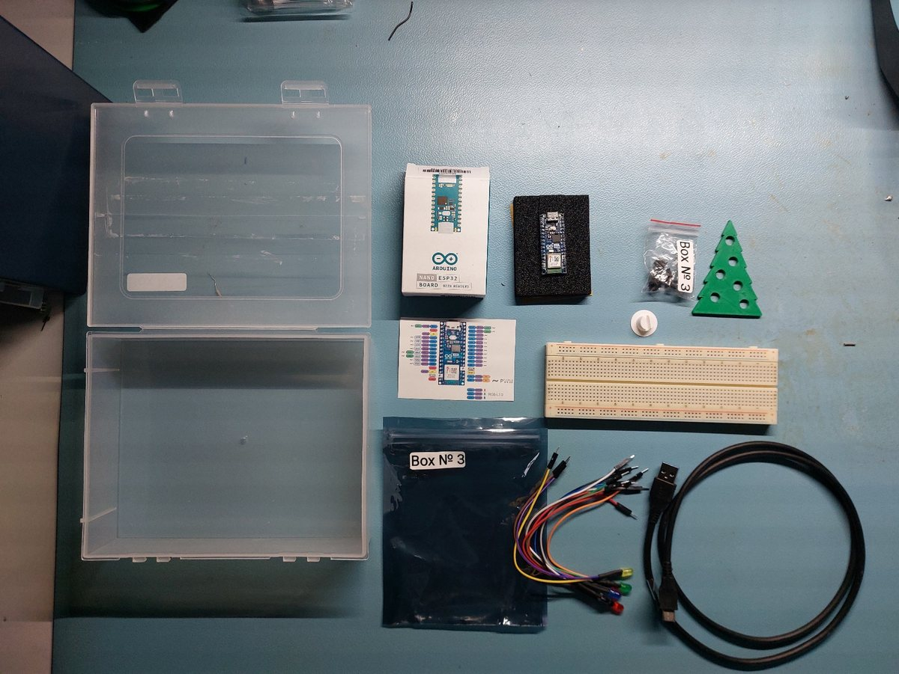
{kind=link}
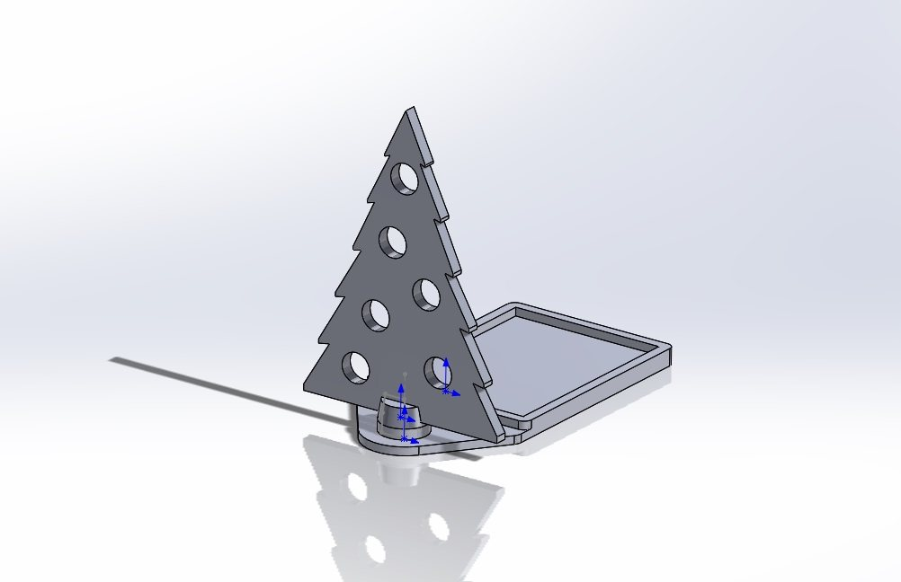
{kind=link}
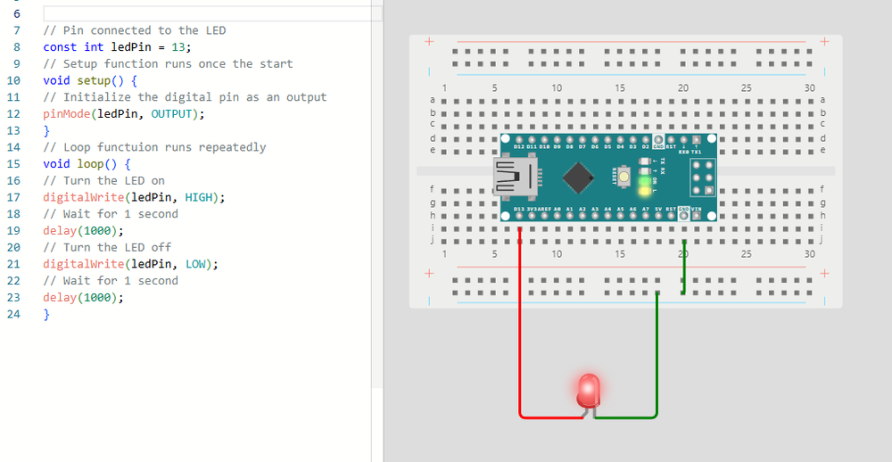
{kind=link}
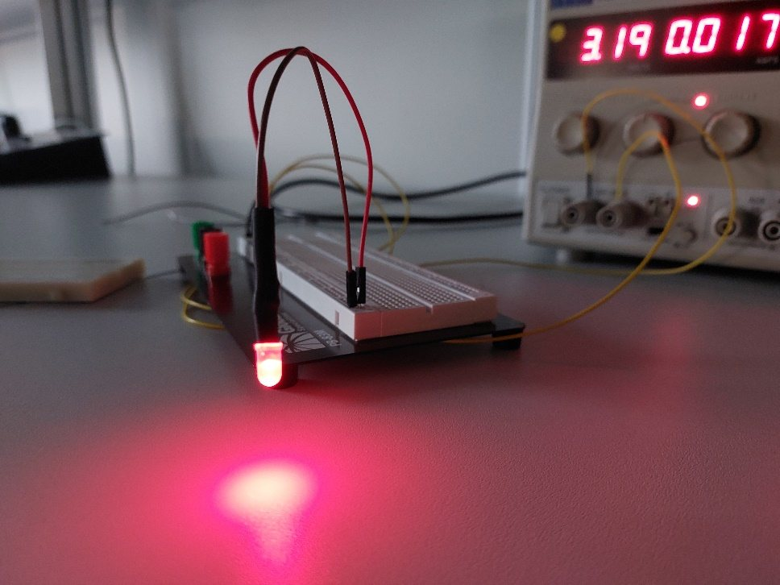
DSafe Modules
| Link | dustypetrol.github.io/DSafe-Modules |
|---|---|
| Purpose | Viewing H5P content that I developed and used in H5P |
| Type | Small public project page / educational content viewer |
Summary
DSafe Modules is a simple page for viewing interactive H5P learning content that I developed as a research assistant in HSHL.
Arduino-based Gaming Console
| Repository | github.com/DustyPetrol/Gaming-Console |
|---|---|
| Collaborator | Oleg Kelner (@eggcitedraccoon) |
| Platform | Arduino-based handheld-style console |
| Inputs / output | 280x240 display, rotary encoder, and two buttons |
Summary
This project is an Arduino-based gaming console that runs on a custom-built hardware setup with a small screen, rotary encoder, and buttons. The software includes a main menu, two playable games, and a shared settings menu for changing difficulty and display-related options.
The two implemented games are Hangman and Bulls and Cows. Hangman uses letter-by-letter input and game-state drawing on the display. Bulls and Cows generates a hidden number and gives feedback through bulls and cows counts until the player guesses the correct number.
Selected Images From Documentation
{kind=link}
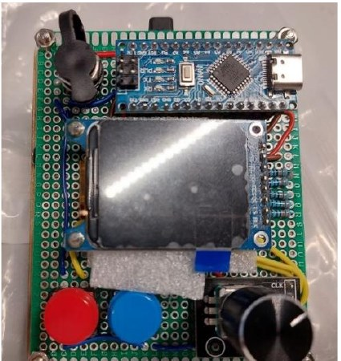
{kind=link}
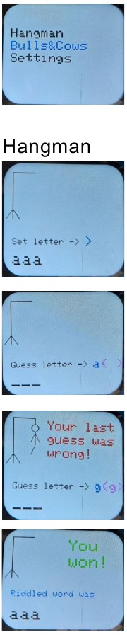
{kind=link}
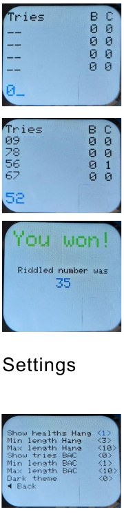
Automatic Plant Watering System
| Repository | github.com/eggcitedraccoon/SS2026_AES_Lab_B4 |
|---|---|
| Context | University project, SS2026 AES Lab B4 |
| System | IoT-based automatic plant watering system for indoor plants |
| Main parts | Raspberry Pi 3B+, ESP32-C3 units, sensors, relays, pumps, and local dashboard |
Summary
This university project is an automatic plant watering system. It monitors soil moisture, temperature, humidity, and water level, then waters plants through pumps when needed. The system is designed for indoor environments such as homes or offices.
The architecture combines embedded watering stations with a central Raspberry Pi controller. ESP32-C3 firmware reads sensors, controls a relay-driven pump, and communicates through MQTT. A local Flask dashboard on the Raspberry Pi receives device data, shows plant status, and can request actions such as manual watering or status updates.
Selected Images
{kind=link}
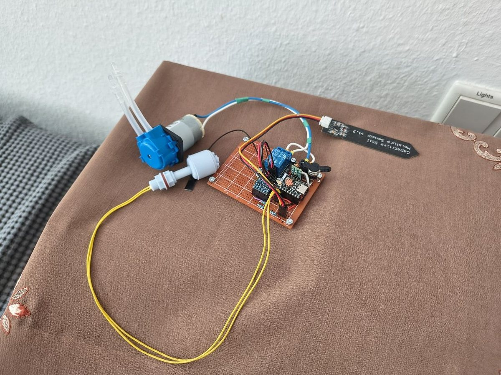
{kind=link}
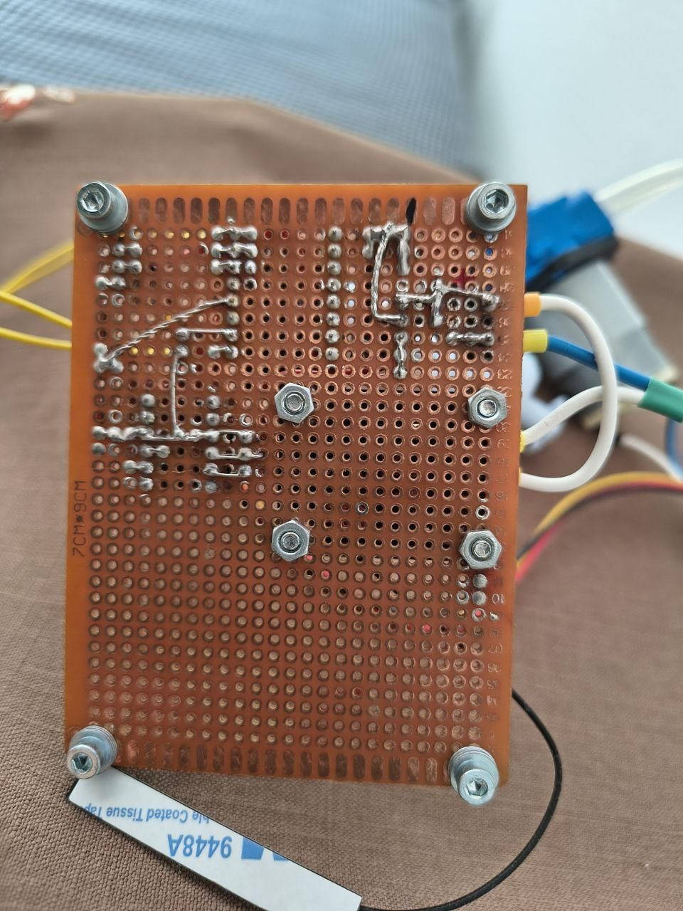
{kind=link}
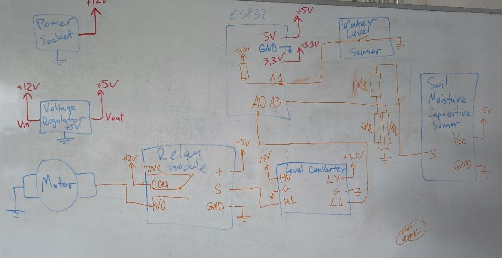
Moodle H5P Content Bank Versioning
| Repository | github.com/DustyPetrol/moodle-h5p-contentbank-versioning |
|---|---|
| Status | Plugin prototype |
| Plugin type | Moodle local plugin: local_h5pversioning |
| Main idea | Controlled version tracking for H5P content in Moodle's Content Bank |
Summary
This is a prototype Moodle local plugin I built for tracking versions of H5P content in the Moodle Content Bank. The goal is to support a central development workflow: one configured development course acts as the source of truth, while course-local copies or remixes do not pollute the main version history.
The plugin listens for Moodle Content Bank events, checks whether the affected item is H5P content, compares file hashes, and creates a new snapshot only when the actual H5P file bytes change. It also keeps event-level logs so an administrator can see when a snapshot was created, when a duplicate save was skipped, or when content was ignored.
What It Includes
- Event observer wiring for Content Bank create, upload, and update events.
- Versioning service logic for resolving H5P items and comparing file hashes.
- Snapshot storage using Moodle-managed file storage.
- Admin report page for event decisions and version history.
- Download support for stored H5P snapshots.
- Database schema and upgrade structure for Moodle installation.
School Practicum: Classroom Technology Support
| Context | Mandatory HSHL school internship / practicum |
|---|---|
| School | Grundschulverbund Brinkmannschule - Schmeddingschule |
| Location | Langenberg, Germany |
| Date | 13 October 2025 - 6 February 2026 |
| Format | Classroom support, lesson material, slides, demonstrations, and guided exercises |
Summary
During this mandatory HSHL school practicum at Grundschulverbund Brinkmannschule - Schmeddingschule in Langenberg, Germany, I supported classroom work around technology and prepared learning material that could be used with pupils. The work included lesson preparation, slide-based explanations, classroom demonstrations, and guided exercises.
A useful part of the practicum was translating technical subjects into activities that pupils could actually try. Instead of only explaining concepts verbally, I used interactive tools and simple experiments to make the ideas easier to understand and discuss.
What I Did
- Prepared lesson material, slides, and classroom explanations for technology topics.
- Supported pupils during exercises and helped answer technical questions.
- Guided pupils through experiments, discussion questions, and small hands-on tasks.
- Adapted explanations to the pupils' level instead of relying only on technical vocabulary.
- Used browser-based tools to make abstract ideas visible and testable during class.
- Documented and organized material so it could be reused or improved later.
Examples of Tools and Activities
| Area | What I used or prepared | What it demonstrated |
|---|---|---|
| Lesson material | Slides, explanations, examples, and guided classroom tasks. | Planning, communication, and adapting technical content for pupils. |
| AI demo | Google Quick, Draw! as a fast classroom example where pupils draw and a neural network tries to guess the object. | Pattern recognition, training data, mistakes, ambiguity |
| AI exercise | Google Teachable Machine to collect examples, train a small model, and test how it reacts to new images, sounds, or poses. | Classes, examples, model training, testing, bias |
| Classroom support | Help during exercises, questions, troubleshooting, and discussion. | Teaching practice, explanation, and working with mixed skill levels. |